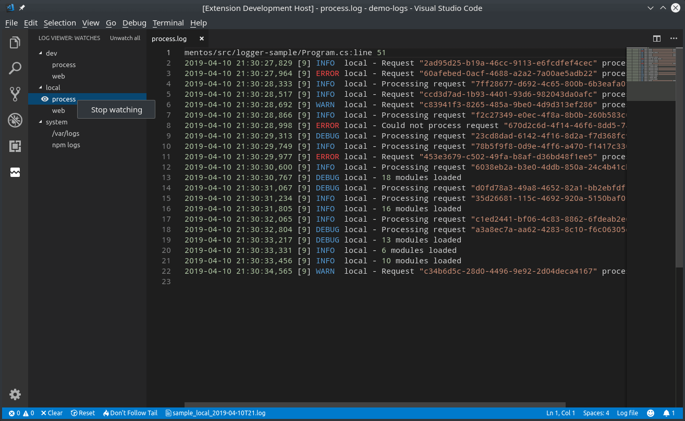

Werkzeuge rund um log4TC
Anzeigen von Log-Meldungen
Log4View
Die Anwendung Log4View von Prosa ist eine unserer Empfehlungen für die Anzeige von mittleren oder grossen Anzahl an Log-Meldungen. Selbst die konstenlose Variante ist für viele Zwecke ausreichend.
Wichtig bei der Benutzung von Log4View mit log4TC sind folgende Punkte:
NLog Konfiguration
NLog muss für die log4j-XML Ausgabe konfiguriert werden. NLog kommt mit einem Standard-Layout log4jxmlevent, das prinzipiell diese Anforderung erfüllt. log4TC stellt aber eine erweiterte Variante mbclog4jxmlevent mit folgenden Verbesserungen zur Verfügung:
- Thread-Id enthält die SPS Task-ID
- Zusätzliches Properties um die Message zu formatieren
Eine Beispiel-Konfiguration könnte so aussehen:
<extensions>
<add assembly="Mbc.Log4Tc.Output.NLog"/>
</extensions>
<targets>
<target name="xmlLogFile"
xsi:type="File"
encoding="utf-8"
fileName="${logdir}/log4tc.xml"
<!-- evtl. weiter File Optionen -->
layout="${mbclog4jxmlevent:includeAllProperties=true:message=${message} [${mbc-all-event-properties}]}">
</target>
Logging
Log4View bietet sehr gute Selektionsmöglichkeiten auf dem Logger und dem Level. Es lohnt sicher daher diese beiden Konsequenzt im Code einzusetzen.
Leider bietet Log4View bis jetzt noch keine Unterstützung von Context-Properties und/oder structured Logging.
Notepad++
Notepad++ bietet zwar keinen speziellen Modus für log4TC besitzt aber zwei Eigenschaften, die es interssant mach für einfache Logging Aufgaben:
- Im Menü "Ansicht" -> "Überwachen (tail -f)" kann Notepad++ angewiesen werden die Log-Datei laufend zu überwachung und bei Änderung automatisch einzulesen.
- Im Menü "Sprachen" kann nach eigenen Anforderungen ein Stil defineirt werden, wie die einzelnen Blöcke in einem Log-File formatiert werden sollen
Visual Studio Code
Visual Studio Code ist ähnlich wie Notepad++ eine universelle Platzform für Textverarbeitung. VS-Code bietet eine grosse Anzahl an Erweiterungen so z.B. auch für Log-File.
Eines davon Log Viewer bietet einfache Möglichkeiten für Log-Files:
